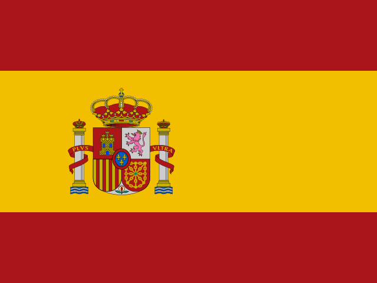

 France10 goals
France10 goalsA wider world
takes the field.
Canada, Mexico and the United States hosted the first 48-team World Cup in 2026. The expanded competition added a round of 32, and Spain won its second title by beating defending champion Argentina after extra time.
The three-country setting gave supporters a tournament spread across a vast map. New arrivals and traditional powers shared the larger field, while long journeys and a new knockout round made the route to the final feel different from earlier editions.
Spain began with a draw against Cabo Verde but progressed from its group. In the knockout rounds it beat Austria and Portugal, while Kylian Mbappé's goals kept France prominent in the other part of the competition.
Spain then eliminated Belgium and France to reach the final. Argentina edged England in the semi-final, setting up a meeting of the previous champion and a Spanish side that had grown more secure as the rounds passed.
The final stayed level until Ferran Torres scored in the 106th minute. Spain held on for a 1–0 win and its second world title, sixteen years after its first.